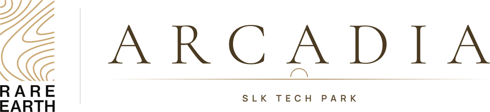

Approved, DC-converted residential sites next to SLK Tech Park.
Sold out · Poojanahalli, next to SLK Tech ParkA sound first step into land.
Arcadia is an approachable first step into land: residential sites at Poojanahalli, right next to SLK Tech Park and within BIAAPA limits. DC converted and approved, every site has now found its owner.
New to land?Start here.
Arcadia is made for a first step into land, and it suits investors just as well. Here is what the paperwork behind these sites means, in plain words, and what to expect on the way to registration.
What does “DC converted” mean?
In Karnataka, agricultural land has to be converted before homes can be built on it. The conversion order comes from the Deputy Commissioner of the district, which is why it is called DC conversion. The sites at Arcadia are DC converted for residential use.
Which approvals are in place?
The sites are DC converted and approved. Arcadia is now sold out; owners can ask us for copies of the approval documents.
What does “within BIAAPA limits” mean?
BIAAPA is the Bangalore International Airport Area Planning Authority, the body that plans development in the area around Kempegowda International Airport. Arcadia, at Poojanahalli, falls within its limits.
Can I get a bank loan?
Bank loans were available for these sites. Arcadia is now sold out, but our team can guide you through loans at Montira and Athena.
What happens at registration, and what will it cost?
Once you have chosen a site and agreed the price, the sale is registered at the Sub-Registrar's office. Stamp duty and registration charges are paid at that point, on top of the price of the site. One team takes you from private viewing through documents and bank loans to registration.
General guidance, not legal advice. Ask us for the documents and charges that apply to your site.
Next toSLK Tech Park.
If you work at SLK Tech Park, Arcadia puts a site of your own right next door. The sites sit beside the tech park at Poojanahalli, within BIAAPA limits.
- SLK Tech ParkAdjacent
- Planning areaWithin BIAAPA limits
- StatusSold out
A sense ofthe sites.
This is an illustrative drawing, made to give a feel for a layout of residential sites. It is not Arcadia's approved layout: the number, size and position of sites on the ground differ. Ask us for the approved layout drawing.
Off the highway,by the airport.
Arcadia is at Poojanahalli, beside SLK Tech Park and about 1.6 km from NH-44 at the airport trumpet. The airport terminals are about 12 km by road, Doddajala station on the airport metro line is being built about 5 km away, and new neighbourhoods such as Godrej MSR City, Tata Carnatica and Birla Trimaya are taking shape across the highway.


✦ Getting around
- NH-44 at the airport trumpetAbout 1.6 km
- KIA Halt railway stationAbout 6.5 km
- Airport City metro station (Blue Line, under construction)About 8.5 km
- Devanahalli townAbout 10 km
- Satellite Town Ring Road (NH-648) at NH-44About 15 km
✦ Work
- SLK Tech ParkNext door
- Prestige Tech Cloud, home to Walmart Global TechAbout 5.5 km
- BLR Airport City business park (under construction)About 8 km
- Boeing's BIETC campusAbout 15.5 km
- KIADB Aerospace ParkAbout 18.5 km
✦ New neighbourhoods
- Embassy SpringsAbout 7 km
- Birla Trimaya (under construction)About 7.5 km
- Godrej MSR City (under construction)About 7.5 km
- Tata Carnatica (under construction)About 10 km
✦ Schools, colleges & care
- NAFL-NPS North, a CBSE schoolAbout 1 km
- Vidyashilp UniversityAbout 9.5 km
- Akash International SchoolAbout 10 km
- Akash Institute of Medical Sciences, a teaching hospitalAbout 10 km
- Harrow International SchoolAbout 14 km
Distances are approximate road distances from the site, from OpenStreetMap routing (October 2026). NH-44 is a divided highway, so places across it are much closer in a straight line than by road. The airport metro line is under construction and is not yet open. Names of other developments are given only to describe the area.
At Poojanahalli,beside the tech park.
Arcadia sits right next to SLK Tech Park, within BIAAPA limits, the planning area around Kempegowda International Airport. Ask us for directions and we will meet you on site.
Seen at Montira,our flagship.
These photographs are of Montira, our villa-plot community at Nandi Hills, not of Arcadia. They show the care we put into the land we develop: roads, planting and finish.


Arcadia, in pictures.
Pictures of Arcadia. Visit with us to see the land itself.
Converted, approved,and sold out.
Arcadia's sites are DC converted and approved, within BIAAPA limits. Every site has now been sold; owners can ask us for copies of their documents.
Good questions,straight answers.
Anything else you would like to know about Arcadia?
Where exactly is Arcadia?
Arcadia is at Poojanahalli, right next to SLK Tech Park and within BIAAPA limits.
Are these the Rare Earth sites at Poojanahalli?
Yes. Arcadia is the name of our residential sites at Poojanahalli, next to SLK Tech Park.
Who bought these sites?
With DC conversion and approvals in place, the sites suited first-time buyers and investors alike, and many who work at SLK Tech Park next door. Every site has now been sold.
Are the pictures on this page of Arcadia?
No. The layout on this page is an illustrative drawing, not the approved layout. The photographs of Montira show our flagship community at Nandi Hills, and the airport and metro pictures are illustrative stock photographs of Bengaluru. None of them are photographs of Arcadia. Ask us for the approved layout drawing, or visit the sites with our team.
Is anything still available at Arcadia?
No. Arcadia is sold out. Montira at Nandi Hills and Athena Phase II at Devanahalli are selling now. Send us a message on WhatsApp, call +91 88841 50025 or use the form on this page, and our team will show you around.
Sold out,with thanks.
Every site at Arcadia has found its owner. If you are looking for land now, Montira at Nandi Hills and Athena Phase II at Devanahalli are selling, and our team will be glad to show you around.
- Call
- Writeinfo@rareearthprojects.com
- WhatsAppMessage us directly
- SiteArcadia, Poojanahalli, next to SLK Tech Park,
within BIAAPA limits - OfficeRarearth Projects Pvt. Ltd., 2nd Floor, Rithik Plaza,
No. 2386/2387, 60 Ft Road, Next to Cauvery Public School,
E Block, Sahakarnagar, Bengaluru 560092
Talk to us
Share a few details and our team will be in touch personally.